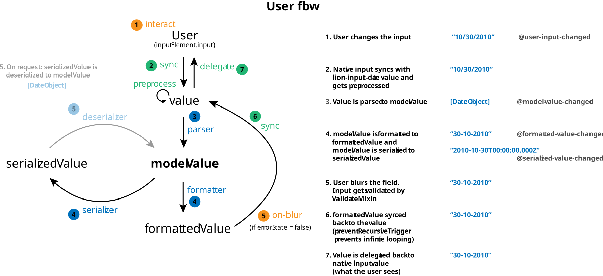
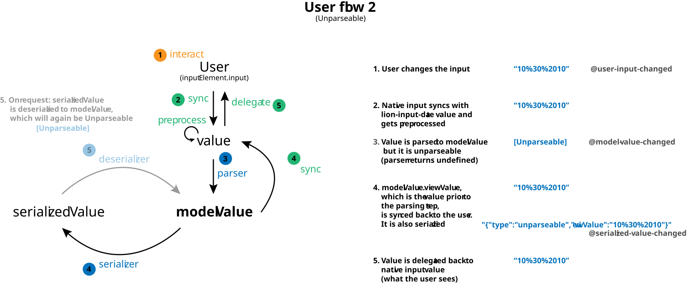
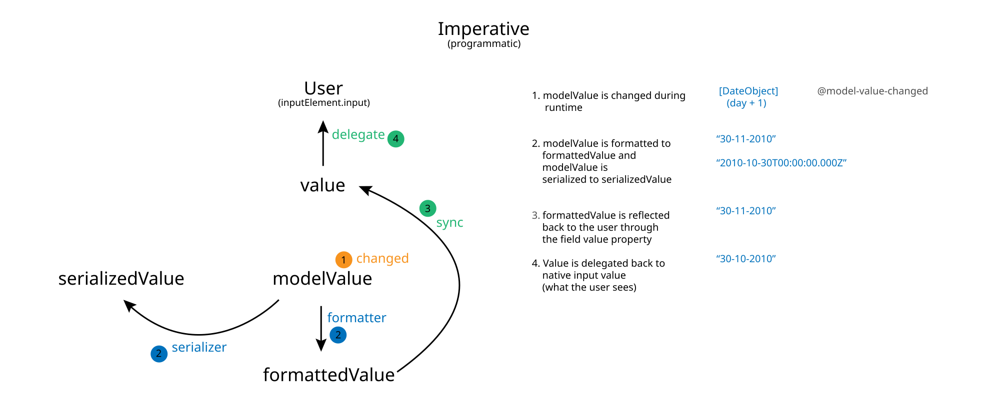

Form: Formatting and Parsing
For demo purposes, below we use
<lion-input>which is a basic extension of<lion-field>. Almost all fields share the same functionality as<lion-input>.
Different values
The FormatMixin which is used in all lion fields automatically keeps track of:
modelValue, which is a result of parsingformattedValue, which is a result of formattingserializedValue, which is a result of serializing
Our fields can automatically format/parse/serialize user input or an input set imperatively by an Application Developer.
Below are some concrete examples of implementations of formatters and parsers mimicking a (basic) amount input.
For an actual amount input, check out lion-input-amount. This comes with its own formatter, parser, serializer.
Parsers & modelValue
A parser should return a modelValue.
The modelValue is the result of the parser function.
It should be considered as the internal value used for validation and reasoning/logic.
The modelValue is 'ready for consumption' by the outside world (think of a Date object or a float).
The modelValue can (and is recommended to) be used as both input value and output value of the <lion-input>.
In essence, the modelValue acts as a Single Source of Truth in our form fields and therefore a single way of programmatical interaction.
Formatted values, serialized values and reflected-back view values are derived from it.
You can listen to model-value-changed event on all fields.
Internally this is also used as the main trigger for re-evaluating validation, visibility and interaction states.
Examples:
- For a
date input: a String '20/01/1999' will be converted to new Date('1999/01/20') - For an
amount input: a formatted String '1.234,56' will be converted to a Number: 1234.56
You can set a parser function on the <lion-input> to set parsing behavior.
In this example, we parse the input and try to convert it to a Number.
export const parser = () => html`
<lion-input
label="Number Example"
help-text="Uses .parser to create model values from view values"
.parser="${viewValue => Number(viewValue)}"
.modelValue="${1234567890}"
@model-value-changed=${({ target }) => console.log(target)}
></lion-input>
<h-output .show="${['modelValue']}"></h-output>
`;
Unparseable
If a parser tries to parse and it returns undefined, the modelValue will be an instance of
Unparseable.
This object contains a type 'unparseable', and a viewValue which contains the String value of
what the user tried to input.
The formatted result of this that is reflected to the user will be the viewValue of the
Unparseable instance, so basically nothing happens for the user.
export const unparseable = () => html`
<lion-input
label="Number Example"
help-text="Uses .parser and return undefined if Number() cannot parse"
.parser="${viewValue => Number(viewValue) || undefined}"
value="${'1234abc567890'}"
></lion-input>
<h-output .show="${['modelValue']}"></h-output>
`;
Formatters
A formatter should return a formattedValue. It accepts the current modelValue and an options object.
Below is a very naive and limited parser that ignores non-digits. The formatter then uses Intl.NumberFormat to format it with group (thousand) separators.
Formatted value is reflected back to the user on-blur of the field, but only if the field has no errors (validation).
export const formatters = () => {
const formatDate = (modelValue, options) => {
if (!(typeof modelValue === 'number')) {
return options.formattedValue;
}
return new Intl.NumberFormat('en-GB').format(modelValue);
};
return html`
<lion-input
label="Number Example"
help-text="Uses .formatter to create view value"
.parser="${viewValue => Number(viewValue.replace(/[^0-9]/g, ''))}"
.formatter="${formatDate}"
.modelValue="${1234567890}"
>
</lion-input>
<h-output .show="${['modelValue', 'formattedValue']}"></h-output>
`;
};
The options object holds a fallback value that shows what should be presented on screen when the user input resulted in an invalid
modelValue.
Serializers and deserializers
A serializer converts the modelValue to a serializedValue. In this example, we decide we want to store the user input to our hypothetical database, but by parsing it with radix 8 first.
A deserializer converts a value, for example one received from an API, to a modelValue. This can be useful for prefilling forms with data from APIs.
There is no
.deserializedValueproperty that stays in sync by default. You need to callel.deserializer(el.modelValue)manually yourself.
export const deserializers = () => {
const mySerializer = (modelValue, options) => {
return parseInt(modelValue, 8);
};
const myDeserializer = (myValue, options) => {
return new Number(myValue);
};
return html`
<lion-input
label="Date Example"
help-text="Uses .(de)serializer to restore serialized modelValues"
.parser="${viewValue => Number(viewValue.replace(/[^0-9]/g, ''))}"
.serializer="${mySerializer}"
.deserializer="${myDeserializer}"
.modelValue="${1234567890}"
></lion-input>
<h-output .show="${['modelValue', 'serializedValue']}"></h-output>
`;
};
Preprocessors
A preprocessor converts the user input immediately on input. This makes it useful for preventing invalid input or doing other processing tasks before the viewValue hits the parser.
In the example below, we do not allow you to write digits.
export const preprocessors = () => {
const preprocess = value => {
return value.replace(/[0-9]/g, '');
};
return html`
<lion-input
label="Date Example"
help-text="Uses .preprocessor to prevent digits"
.preprocessor=${preprocess}
></lion-input>
<h-output .show="${['modelValue']}"></h-output>
`;
};
Live formatters
Live formatters are a specific type of preprocessor, that format a view value during typing. Examples:
- a phone number that, during typing formats
+316as+31 6 - a date that follows a date mask and automatically inserts '-' characters
Type '6' in the example below and see that a space will be added and the caret in the text box will be automatically moved along.
export const liveFormatters = () => {
return html`
<lion-input
label="Live Format"
.modelValue="${new Unparseable('+31')}"
help-text="Uses .preprocessor to format during typing"
.preprocessor=${(viewValue, { currentCaretIndex, prevViewValue }) => {
return liveFormatPhoneNumber(viewValue, {
regionCode: 'NL',
formatStrategy: 'international',
currentCaretIndex,
prevViewValue,
});
}}
></lion-input>
<h-output .show="${['modelValue']}"></h-output>
`;
};
Note that these live formatters need to make an educated guess based on the current (incomplete) view
value what the users intentions are. When implemented correctly, they can create a huge improvement
in user experience.
Next to a changed viewValue, they are also responsible for taking care of the
caretIndex. For instance, if +316 is changed to +31 6, the caret needs to be moved one position
to the right (to compensate for the extra inserted space).
When to use a live formatter and when a regular formatter?
Although it might feel more logical to configure live formatters inside the .formatter function,
it should be configured inside the .preprocessor function. The table below shows differences
between the two mentioned methods
| Function | Value type recieved | Reflected back to user on | Supports incomplete values | Supports caret index |
|---|---|---|---|---|
| .formatter | modelValue | blur (leave) | No | No |
| .preprocessor | viewValue | keyup (live) | Yes | Yes |
Flow Diagrams
Below we show three flow diagrams to show the flow of formatting, serializing and parsing user input, with the example of a date input:
Standard flow
Where a user changes the input with their keyboard:

Unparseable flow
Where a user sets the input to something that is not parseable by the parser:

Imperative / programmatic flow
Where the developer sets the modelValue of the input programmatically:
